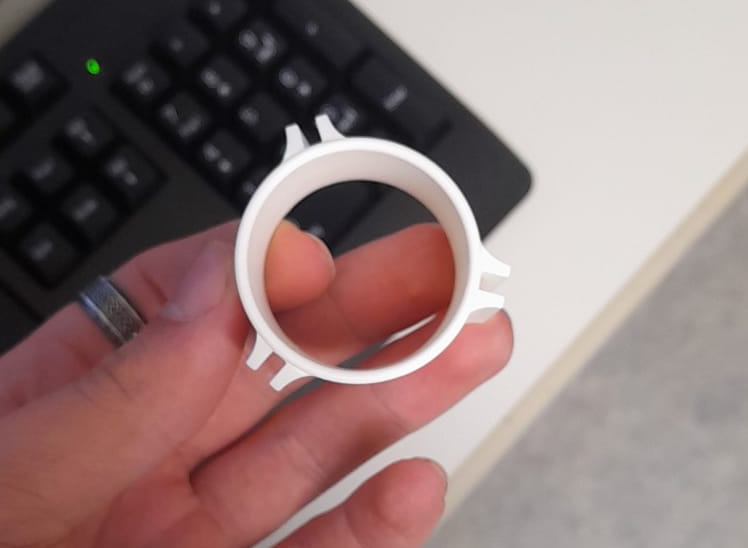
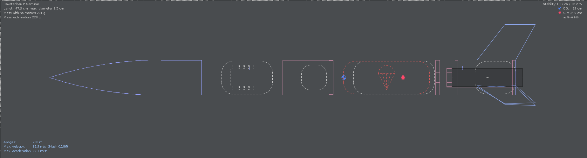

Phase I
Designing the small rockets
The first step was having the other students build small rockets to gain familiarity with the material, workflow, simulation software and physics behind rocketry. In order to make it as easy as possible for them, we designed the rocket for them much like it had been done for us during our internship.
Components and Acquisition
We 3D-printed a custom engine/fin mount. It contains the premade mount for the rocket engine and holds the custom-made fins. The mounting points for the fins are slightly tilted to allow for a stabilizing rotation using aerodynamics.

Fig 1: The final rocket/fin mount
Using the simulation software OpenRocket, we finalised the design to fly about 230m high. To power them, we opted for the same thrust source as during our internship - D9-5 class solid-propellant rocket engines. The body parts, parachute and nose cone were all ordered from Klima, a store specifically for model rocketry. To deploy the parachute, we used the engine's secondary explosive payload, which fires within 5 seconds of the primary thrust ending (this is where the '5' in D9-5 comes from).

Fig 2: Design of the small rocket
In the simulation file, we reached about 12.2% stability, slightly below the optimum of around 15.7%. We ended up shifting the center of gravity more toward the front while finishing the build process, which updated our stability to 16%.
Materials
Every material impacted the weight distribution, center of gravity and structural integrity, so we spent quite a bit of time experimenting with our different options. This is what we ended up using:
| Component | Material | Key reason for choice |
|---|---|---|
| Fins | Balsa wood | weight |
| Engine/fin mount | White PLA filament | price, stability, printing speed |
| Fuselage | Carton | price |
| Nose cone | Plastic | price, structural integrity |
Fig 3: Materials used
Appearance and Styling
For visuals, we opted for a red body, white engine/fin mount and wooden fins (custom made by the friend btw). The students were given the choice of a white or black nose cone, with the additional freedom of painting the rockets themselves, which resulted in some cool designs.

Fig 4: The rockets on launch day